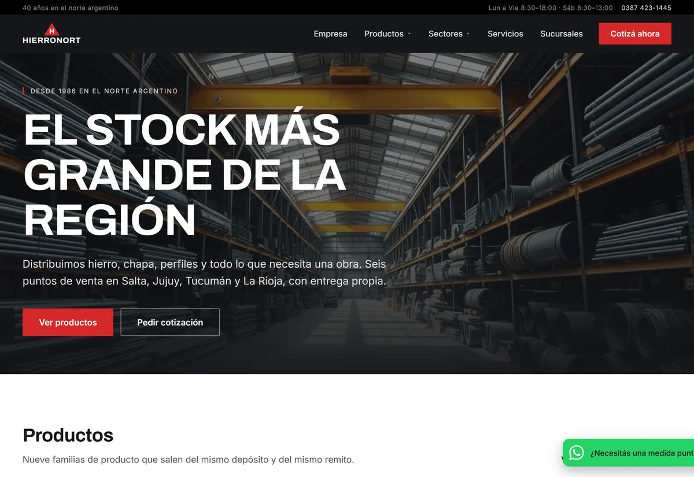
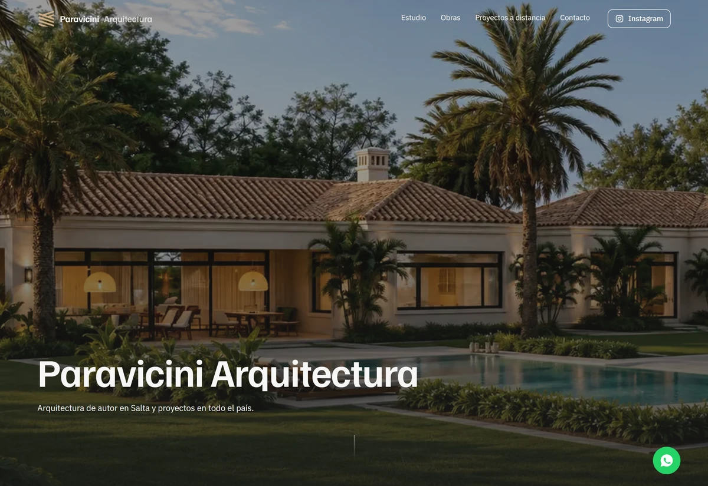
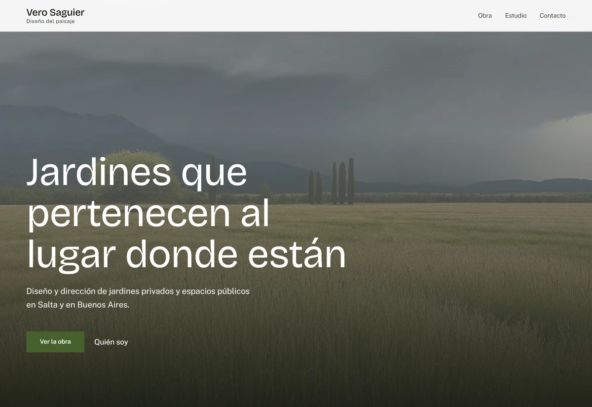
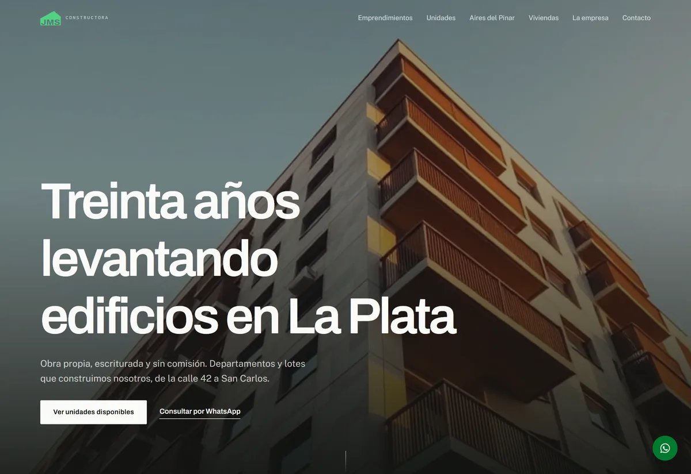
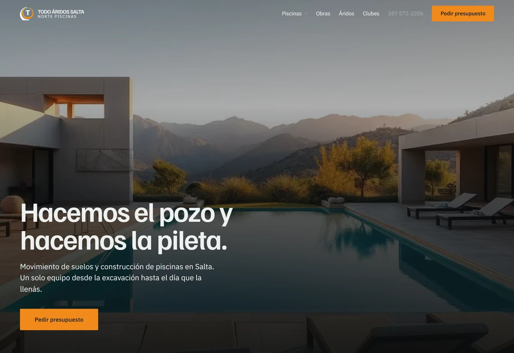
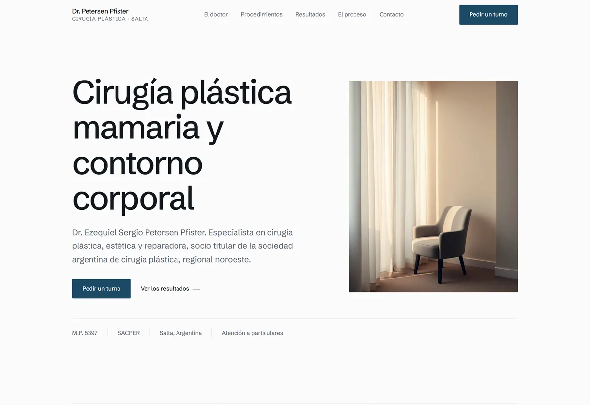
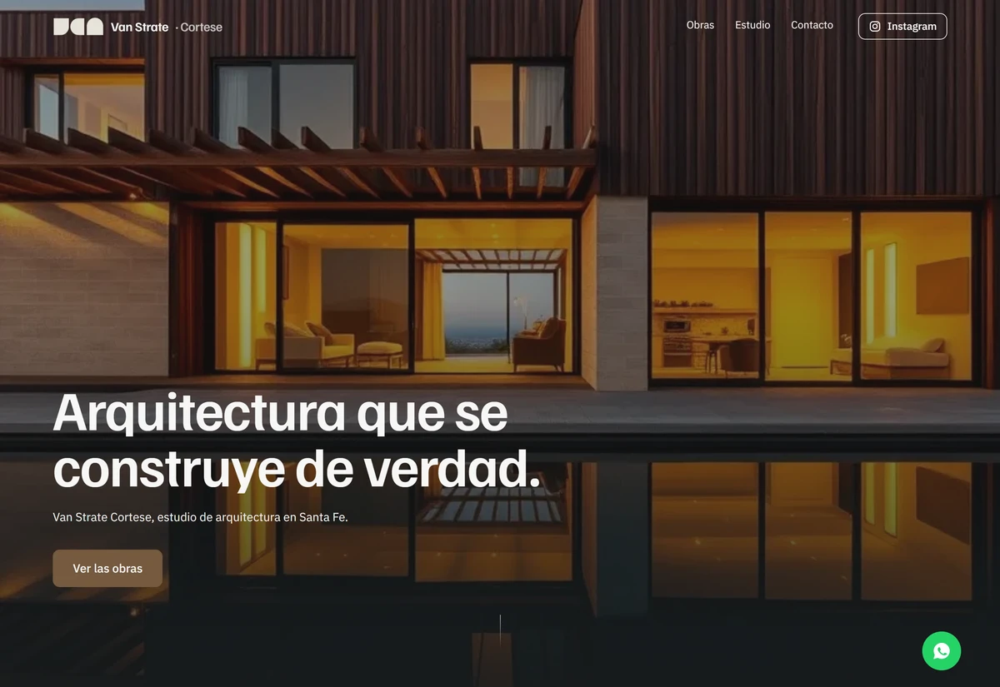

03 Proyectos
Trabajo seleccionado.
Casos reales entre sitios en vivo y proyectos de UX/UI en proceso. Hacé clic en una tarjeta para abrir el case study: problema, objetivo, proceso y resultado.
Todos los proyectos
21 casos













